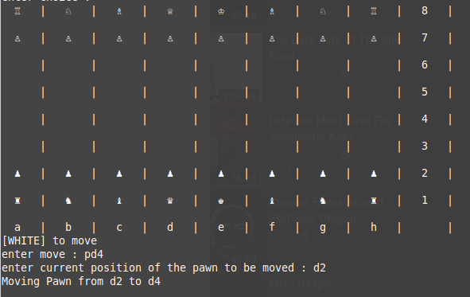
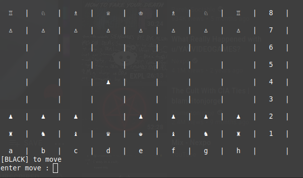
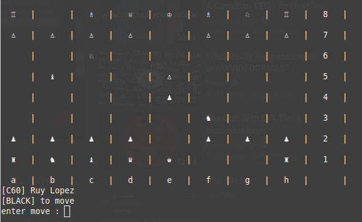
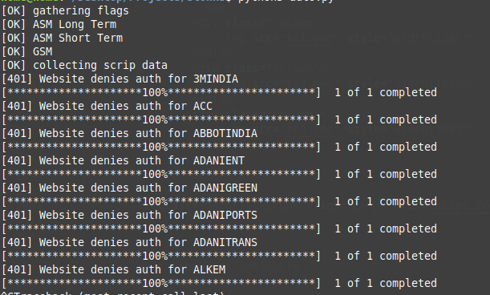
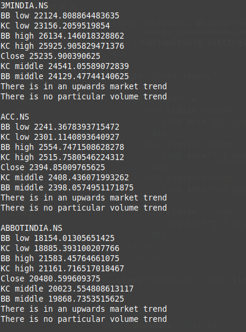
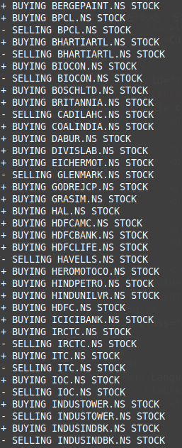
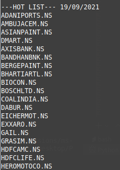

Software Developer
You can find my PDF resume here
About Me
I am a student who is passionate about technology and computer science,
looking to pursue a career in tech and looking for internships opportunity
to get some in the field experience to advance and discover what I enjoy doing in tech.
I started coding in high school and since then have worked on projects that inspire me.
I am a recent immigrant from India, and am excited to explore new opportunities.
Skills
- Vim
- Linux
- git & GitHub
Programming
Python
SQL
JavaScript
C/C++
Strengths
chat Oral and Written communication
groups Leadership Skills
school Lifelong Learning & Curious Nature
search Objectivity and open-mindedness
Education
BSc in Computer Science
University of Saskatchewan
today 2021- OngoingExperience
Looking for internships!
Projects
source to source, self-compiling python compiler
A compiler written in Python that translates python code into python. Hence the long name.
It started off as a project to implement fun easter eggs in python but later evolved to cover
functional methods to extend functionality offered by python. The easter eggs portion of the
code mainly utilise RegEx while the functional portions make use of parsing and lexical analysis.
link GitHub Link
terminal_chess
A multiplayer terminal based chess program developed from scratch.Written in Python (3.6.9) and powered by a localhost mySQL server.




Stonks
A python program that collects scrip data from the NSE (National Stock Exchange)and suggests recommendation for stocks to buy. It has some nifty features like :
- Uses the momentum squeeze indicator by LazyBear for the main algo
- Differentiates between sure sell and profit booking
- Does not recommend scrips in ASM and GSM lists
- Stores recommendation data in json files
- Customizable parameters
- Automatically detects holidays and weekends ie when the market is closed
- Custom strategies can be backtested historically




Languages
| Language | Read | Write | Speak | English | done | done | done |
|---|---|---|---|
| Gujarati (Native) | done | done | done |
| Hindi | done | done | done |
My Coding Timeline
| Year | Material Learnt |
|---|---|
| 2017 | C, HTML, mySQL |
| 2018 | C, HTML, mySQL |
| 2019 | Python, mySQL |
| 2020 | Python, mySQL |
| 2021 | Python, JavaScript |
Contact Me
Email : adhyanpatel@gmail.com
GitHub : github.com/frroossst
Secondary email : adhyanpatel@protonmail.com